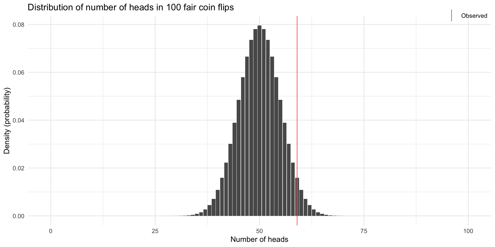
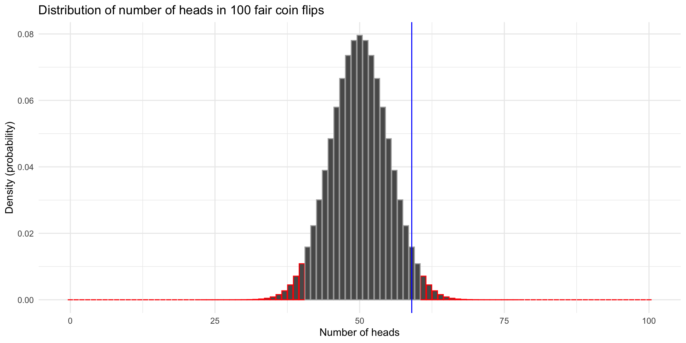
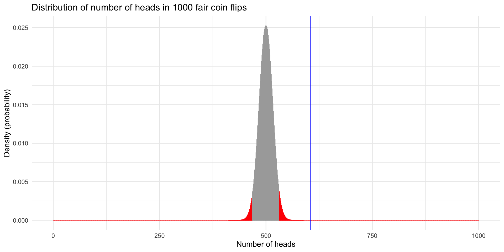
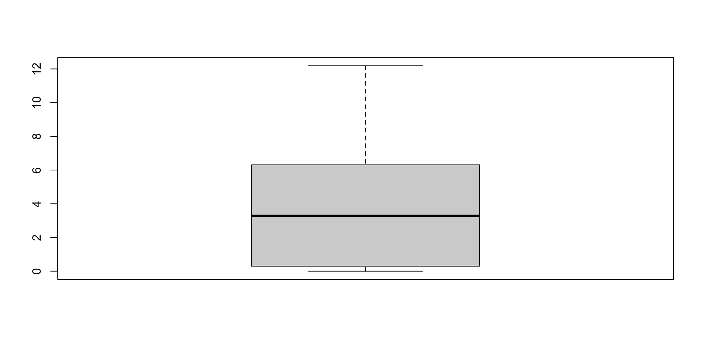
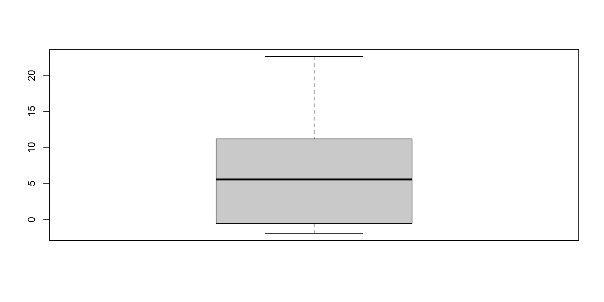
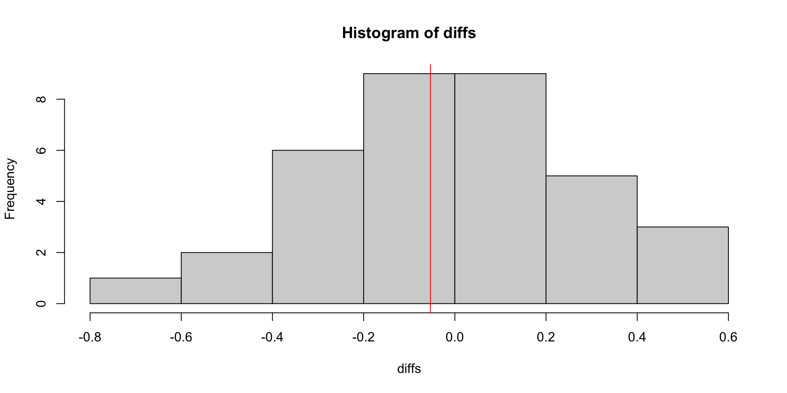
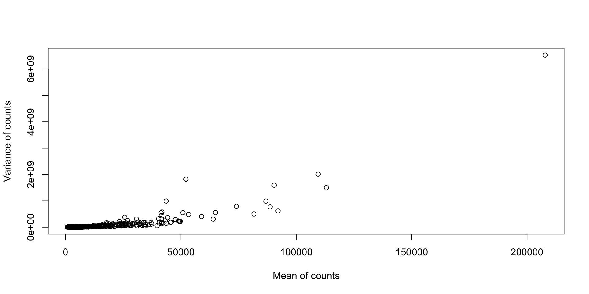
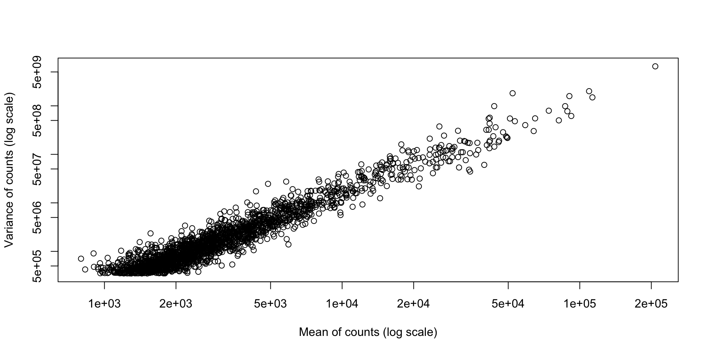

[1] "T" "T" "H" "T" "H" "H"coinFlips
H T
59 41 Testing and High-throughput count data
2025-10-30
Example: coin flip.
If \(p = 0.5\) were true, how likely is it to observe the number of heads we did?
[1] "T" "T" "H" "T" "H" "H"coinFlips
H T
59 41 

So we do not reject the null hypothesis. Does that mean the coin is fair?
Exact binomial test
data: sum(coinFlips == "H") and numFlips
number of successes = 59, number of trials = 100, p-value = 0.08863
alternative hypothesis: true probability of success is not equal to 0.5
95 percent confidence interval:
0.4871442 0.6873800
sample estimates:
probability of success
0.59 What if we increased the sample size to 1000 flips with the same probability of heads?
coinFlips
H T
604 396 
Exact binomial test
data: sum(coinFlips == "H") and numFlips
number of successes = 604, number of trials = 1000, p-value = 5.062e-11
alternative hypothesis: true probability of success is not equal to 0.5
95 percent confidence interval:
0.5729182 0.6344677
sample estimates:
probability of success
0.604 library(pasilla)
fn = system.file("extdata", "pasilla_gene_counts.tsv",
package = "pasilla", mustWork = TRUE)
counts = as.matrix(read.csv(fn, sep = "\t", row.names = "gene_id"))
print(dim(counts))[1] 14599 7[1] "untreated1" "untreated2" "untreated3" "untreated4" "treated1"
[6] "treated2" "treated3" [1] "FBgn0000003" "FBgn0000008" "FBgn0000014" "FBgn0000015" "FBgn0000017"
[6] "FBgn0000018"

t.test on each gene between the two conditions.p.adjust(..., method="BH").Why (or when) would we use this?
log_counts <- log1p(cts_subset)
gene <- genes_to_analyze[1]
shuffles <- combn(7, 4)
diffs <- apply(shuffles, 2, function(untreated_idx) {
mean(log_counts[gene,untreated_idx]) - mean(log_counts[gene,-untreated_idx])
})
untreated_mean <- mean(log_counts[gene, str_detect(colnames(log_counts), "untreated")])
treated_mean <- mean(log_counts[gene, str_detect(colnames(log_counts), "treated")])
observed <- treated_mean - untreated_mean
print(observed)[1] -0.05359491[1] 0.8571429
glm(..., family = "poisson") to fit a Poisson GLM.nest function.Prepare the data…
[1] "genes" "untreated1" "untreated2" "untreated3" "untreated4"
[6] "treated1" "treated2" "treated3" dat_long <- pivot_longer(dat, cols = -genes, names_to = "sample", values_to = "count") %>%
mutate(condition = if_else(str_detect(pattern = "untreated", sample), "untreated", "treated"))
# Nest data by genes
nested_data <- dat_long %>%
group_by(genes) %>%
nest()
nested_data# A tibble: 2,000 × 2
# Groups: genes [2,000]
genes data
<chr> <list>
1 FBgn0000556 <tibble [7 × 3]>
2 FBgn0064225 <tibble [7 × 3]>
3 FBgn0040813 <tibble [7 × 3]>
4 FBgn0002526 <tibble [7 × 3]>
5 FBgn0000559 <tibble [7 × 3]>
6 FBgn0026562 <tibble [7 × 3]>
7 FBgn0000042 <tibble [7 × 3]>
8 FBgn0027571 <tibble [7 × 3]>
9 FBgn0001219 <tibble [7 × 3]>
10 FBgn0003517 <tibble [7 × 3]>
# ℹ 1,990 more rowspoisson_glm_nested <- nested_data %>%
mutate(glm = map(data, ~glm(count ~ condition, data = .x, family = "poisson")),
tidy_glm = map(glm, broom::tidy))
poisson_glm_nested# A tibble: 2,000 × 4
# Groups: genes [2,000]
genes data glm tidy_glm
<chr> <list> <list> <list>
1 FBgn0000556 <tibble [7 × 3]> <glm> <tibble [2 × 5]>
2 FBgn0064225 <tibble [7 × 3]> <glm> <tibble [2 × 5]>
3 FBgn0040813 <tibble [7 × 3]> <glm> <tibble [2 × 5]>
4 FBgn0002526 <tibble [7 × 3]> <glm> <tibble [2 × 5]>
5 FBgn0000559 <tibble [7 × 3]> <glm> <tibble [2 × 5]>
6 FBgn0026562 <tibble [7 × 3]> <glm> <tibble [2 × 5]>
7 FBgn0000042 <tibble [7 × 3]> <glm> <tibble [2 × 5]>
8 FBgn0027571 <tibble [7 × 3]> <glm> <tibble [2 × 5]>
9 FBgn0001219 <tibble [7 × 3]> <glm> <tibble [2 × 5]>
10 FBgn0003517 <tibble [7 × 3]> <glm> <tibble [2 × 5]>
# ℹ 1,990 more rowsp_values <- poisson_glm_nested %>%
unnest(tidy_glm) %>%
filter(term == "conditionuntreated") %>%
dplyr::pull(p.value)
# Adjust for multiple testing.
adj_pvalues <- p.adjust(p_values, method = "BH")
# Number of differential genes.
sum(adj_pvalues < 0.05)[1] 1704A bit too many?


glm.nb from MASS package (not offered by glm).nb_glm_nested <- nested_data %>%
filter(genes %in% genes_to_analyze) %>%
mutate(glm = map(data, ~glm.nb(count ~ condition, data = .x)),
tidy_glm = map(glm, broom::tidy))
p_values <- nb_glm_nested %>%
unnest(tidy_glm) %>%
filter(term == "conditionuntreated") %>%
dplyr::pull(p.value)
adj_pvalues <- p.adjust(p_values, method = "BH")
sum(adj_pvalues < 0.05)[1] 11